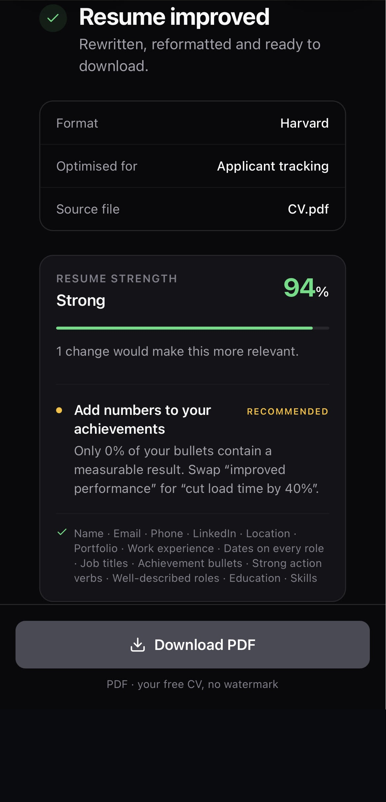
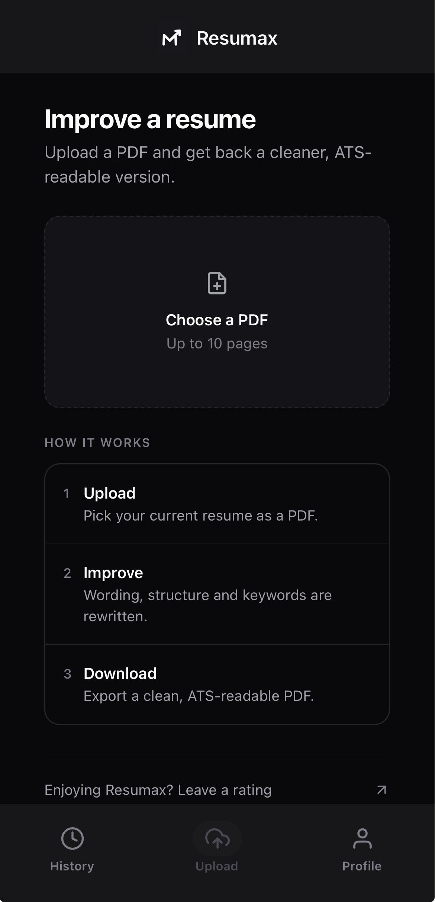
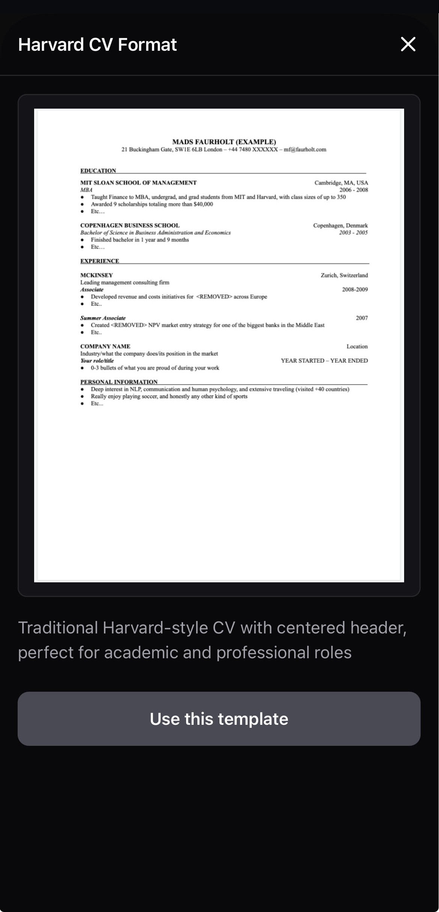
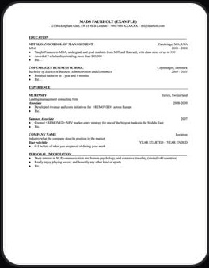
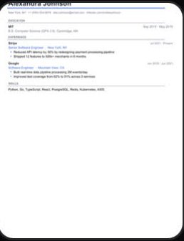
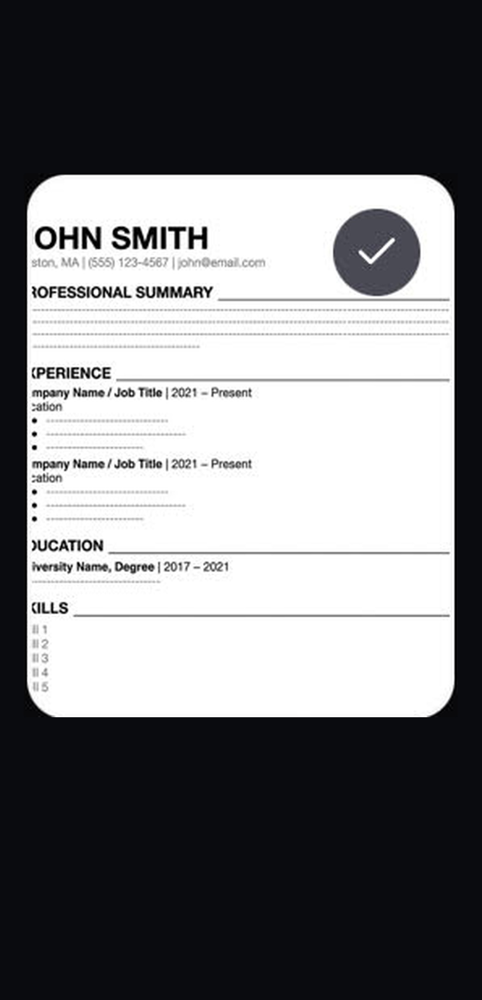

Instant ATS
Optimization
Get real-time AI scoring and actionable improvements.

Transform Your
Resume
Upload any PDF to rewrite and polish in seconds.

Proven Professional
Formats
Industry-standard layouts designed to pass HR filters.

Global Resume
Formats
Export in Harvard, Europass, or ATS-optimized layouts with one tap.
Europass (EU)
US / Canada Resume


